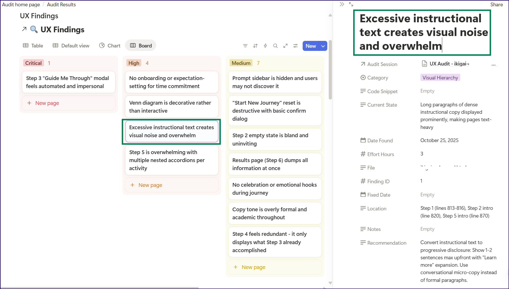
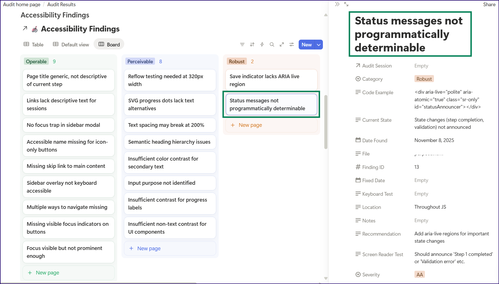
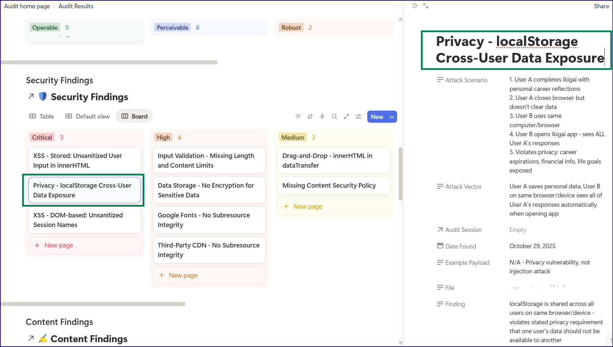
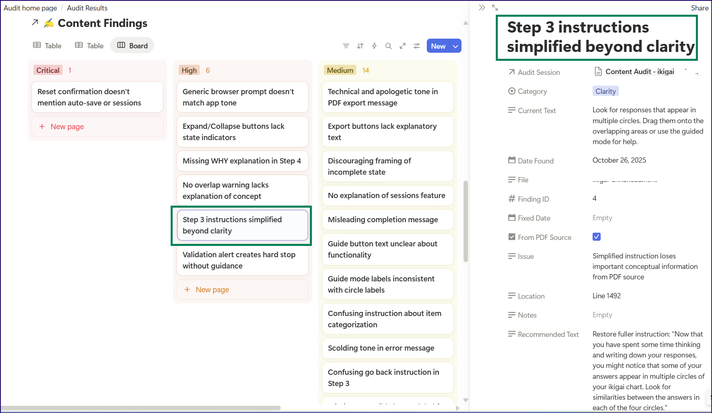

Watching Claude build an audit system using Notion MCP
I had built five audit skills for my Ikigai app - UX, Code Quality, Content Accuracy, Accessibility, and Security - where each one could analyze the app and generate unique, detailed findings as expert team personas. But the audit reports existed only as chat artifacts, and I wanted them in Notion where I could track fixes, link to GitHub issues, and measure progress over time.
On prompting, Claude suggested the database schemas I'd need in Notion to track audits: ten databases - five for audit sessions, five for individual findings - all with proper schemas and relations between them.
I manually created one database in Notion to test the concept. Getting every property right - the select options, the number fields, the relations - took focus that would now need to last for ten databases.
So instead, I set up the Notion MCP connection and asked Claude to complete the task.
The setup
I followed Notion's official MCP documentation. After initial hiccups caused by Claude's integration docs, I created a Notion MCP -> Claude integration, got the API key, and added it to Claude Desktop's config file. The authentication part was straightforward.
Fair warning though, this integration needs refreshing everyday (or maybe that's just Claude being moody?); Claude refuses to sync with Notion when I try to pick up database tasks from where I left off the previous evening. I always rejig the config now before starting a database sync.
Next, I directed Claude to write a Node.js setup script with checkpoint functionality in case anything failed midway. I needed it to create all ten databases with complete schemas, then link them together with relations. I can't, and didn't have to, write a single line of the setup code!
The moment!
I ran the command, and Claude started creating the databases. I switched to Notion and hit Refresh. Ten databases appeared! Each one properly configured: UX Audit Sessions with all its metrics, UX Findings with severity levels and status tracking, Code Quality Sessions, Code Quality Findings, everything.
It warranted a little dance!
Running the first audit
The app's first draft had obvious UX issues that jumped out at me immediately, and I wondered if the UX Auditor Skill would catch the same annoyances.
I typed:
Use the UX Auditor skill. File: xyz.html. After the audit, save results to Notion.
TBH, I half-expected something to break, or have Claude tell me there's a property mismatch or a missing field, or that some piece of code wasn't working.
Claude ran the audit and found 18 UX issues including one critical finding about the app being boring(!). The UX Auditor caught every issue that was bugging me at first glance, and then some. The audit was more nuanced than I expected, with detailed severity ratings and specific recommendations.
Claude then searched for the relevant Notion databases, created an audit session entry, created 18 individual finding entries, linked them all together, and gave me the Notion URLs.
Just like that.
The two-database pattern
I hadn't immediately understood why Claude created two databases per audit type initially, but it made sense as soon as I looked at the audit data.
For each skill:
One database holds the session, the macro view: date, file analyzed, total findings count, severity distribution, overall scores. The executive summary, if you will.
The other holds individual findings, the details. Each specific issue with its location, current state, recommendation, effort estimate, and status.
Sessions link to findings. Findings link back to sessions. You can view either the forest or the trees.
The (technical) reality check
I ran the Content Accuracy Checker skill to see if I’d just gotten lucky with the first audit or if this was a working idea. It was, to an extent, beginner’s luck. While the audit ran great and Claude managed to publish everything to Notion, we hit a technical issue toward the end, and the chat timed out. My Claude chat history has no record of those Content Accuracy findings!
This made me think about all the previous instances where I've lost entire chats because Claude timed out or hit context limits. Maybe writing Claude outputs to a linked external database should be the norm for any work?
What's next
The integration works well. I have two audits completed with reports in Notion, ready to track. I want to turn Notion findings into GitHub issues now to track completion and link to release notes, etc.
The audit skills themselves could become measurement tools. If I keep the check parameters unchanged, running audits at regular intervals could give me an objective progress marker.
Fix issues --> run audit again --> compare results = hard quality numbers!
The learning
I now know to keep my requests to Claude simple. The clearer and more direct the task, the better the results. No need to overthink the prompts.
This wasn't about me writing clever code or complex prompts. It was about Claude understanding the schemas needed and building them correctly. The manual work I'd done on that first database taught me what properties mattered. But scaling that to ten databases with relations, the setup script, the database schemas, the Notion integration, the audit execution was all Claude.
(MCP FTW!)
Here are snapshots of the Notion audits:



